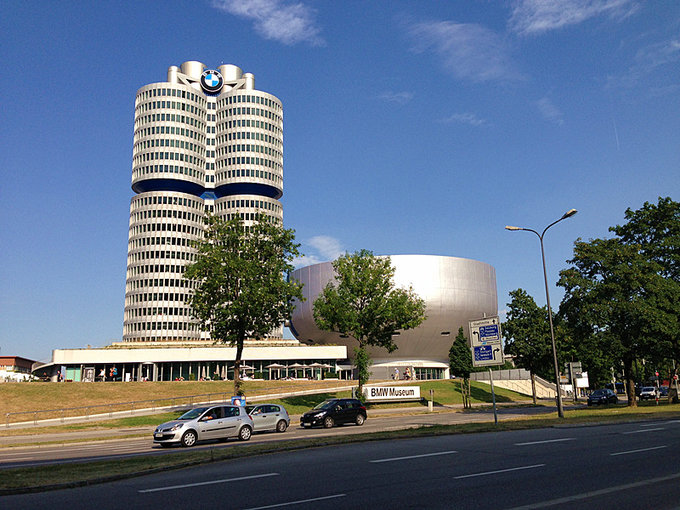

感谢上帝，让我在最美的年华里遇见你——送给亲爱的大欧洲
下面来说我的毕业旅行。 是这样的，从2013年7月23日到2013年8月20日我都一直在旅途中，但是是间断性的。中途我还有返回意大利，因为要办理一些回国的手续和琐事。 在欧洲的这四年半的时间里，我去过了希腊、西班牙、瑞士、荷兰、法国、摩纳哥、德国、奥地利、卢森堡、比利时、捷克，还有圣马力诺和梵蒂冈这两个意大利包围的袖珍国。
德国篇： 喜欢德国很久啦，尤其是他们严谨准时的态度和意大利形成了鲜明的对比。之前因为去过瑞士，觉得德语区就是高大上啊。老实说，从上空俯视过德国好几次，因为每次回国都是走汉莎，法兰克福或者慕尼黑转机。但是从来没有真正接到地气啊。所以作为毕业旅行的第一站，首选德意志。 这一个月里，德国是分两段玩的。 第一段是拜仁州，慕尼黑、天鹅堡、国王湖一直延到奥地利。 第二段是从卢森堡进到科隆、杜塞尔多夫、海德堡、法兰克福出到巴黎。 要说遗憾应该是没有去柏林吧，只是上空俯视了下。其他也还好，毕竟第一次不可能面面俱到。先来说第一段德国行
7月23日：米兰——慕尼黑
我是7月上旬才定的机票，因为那个时候才确定了毕业答辩的时间，才好知道什么时候可以走。而大家都知道了夏天是旅游旺季，机票都比较贵。那个时候查出来比较便宜的就是柏林航空了。米兰到慕尼黑，但是居然还要柏林转机，所以我说我和柏林就是蜻蜓点水了一下哈。
柏林航空是第一次坐呢，还有机餐不错了。就这样和柏林擦肩而过了，然后来到慕尼黑。到慕尼黑的时候大概是中午的样子，那段时间真是暴热啊。在欧洲多年也养成了从不打伞闷头走的习惯，主要还是嫌麻烦。 话说慕尼黑的整体物价还是比较高的，当时预定的旅馆是litty's hotel。Booking上可以找到哦，靠近中央火车站。是一个单人间，加公用浴室，但是我洗澡的两次都没有人在用，一层楼有一个浴室。环境很好，很干净，早餐也很丰富。 找到旅馆，拿了地图之后就开始玩了。当天是买了天票的，因为从慕尼黑机场到市区就有一次路费，而想想之后还要再市里面玩所以干脆买了张天票，是11.2欧，这样一天的交通费就都包括了。 市里面先去的是奥利匹克公园Olympiapark。不在市中心，还比较偏远，所以先去了。地铁3号线可以到，就在olympiazentrum下车，下来很快就看到一个电视塔了。电视塔上面可以看慕尼黑的全景。也是那个时候看到了不远的宝马世界。非常醒目。
俯视看到的宝马世界从电视塔上看完全景之后就下来直奔宝马博物馆了。不算远。但是可惜我去的时候已经下午五点半了。那里是6点关门。工作人员已经不允许再进来买票参观了。看里面好几层都有很多车型展示，反正我一女生也不是车迷，不过多多少少有点可惜啦。
 宝马博物馆